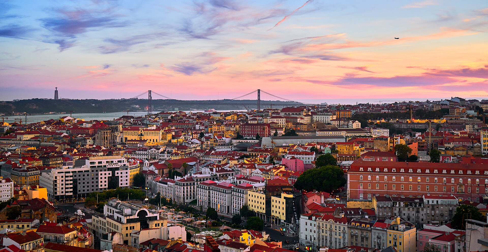

Turismo em Lisboa
Lisboa
Lisboa é a capital e maior cidade de Portugal, com uma população estimada de 548 703 habitantes dentro dos seus limites administrativos numa área de cerca de 100 quilómetros quadrados. É a capital mais ocidental da Europa continental (a segunda no geral, depois de Reiquiavique) e a única ao longo da costa atlântica, estando as outras em ilhas. A cidade situa-se na parte ocidental da Península Ibérica, na margem norte do rio Tejo. Na parte ocidental da sua área metropolitana, a Costa do Estoril, situa-se o ponto mais ocidental da Europa continental, o cabo da Roca.
